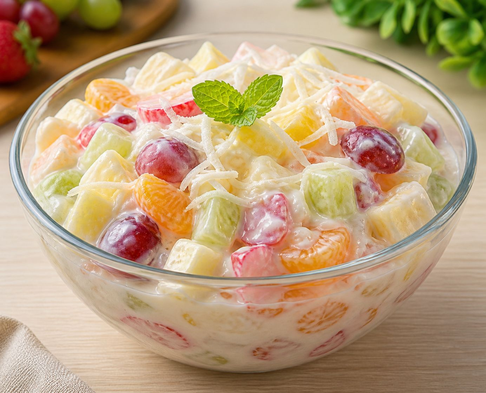

Rahasia Membuat Salad Buah Segar dan Creamy: Pilihan Saus dari yang Gurih hingga Sehat
Siapa yang bisa menolak segarnya semangkuk salad buah di sore hari yang panas? Di Indonesia, salad buah bukan sekadar hidangan penutup, tapi juga cemilan sehat yang mudah ditemui, baik di pedagang kaki lima maupun restoran berbintang.

Namun, rahasia utama kenikmatan salad buah sebenarnya bukan terletak pada buahnya saja, melainkan pada saus atau dressing yang digunakan. Saus inilah yang menyatukan berbagai tekstur dan rasa buah menjadi satu keharmonisan rasa.
Hari ini, kita akan membahas tuntas bagaimana membuat salad buah yang sempurna. Khususnya, kita akan mengupas variasi saus yang bisa Anda pilih sesuai selera, mulai dari yang klasik, gurih, hingga alternatif yang lebih sehat.
1. Pilihan Populer: Klasik Manis dan Creamy ala Indonesia
Jika Anda sering membeli salad buah di pinggir jalan atau mall di Indonesia, rasa yang paling familiar adalah perpaduan rasa manis yang kental dan gurih yang lembut. Ini adalah standar rasa salad buah versi Indonesia yang banyak disukai.
Rahasia dibalik kelezatan ini adalah kombinasi tiga bahan utama:
- Mayonnaise: Memberikan tekstur creamy dan rasa gurih dasar.
- Yogurt: Menambahkan sedikit rasa asam segar dan tekstur yang lebih "berat".
- Susu Kental Manis: Ini adalah bintangnya. Susu kental manis memberikan rasa manis yang pekat dan tekstur kental yang membuat saus melapisi buah dengan sempurna.
Tips Membuat:
Campurkan ketiga bahan ini dengan perbandingan 1:1:1 untuk rasa yang seimbang. Aduk rata hingga mengental. Saus ini cocok banget buat kamu yang suka salad buah dengan karakter rasa yang "nendang" dan manis.
2. Alternatif Lebih Sehat: Tetap Lezat Tanpa Susu Kental Manis
Zaman sekarang, banyak di antara kita yang mulai sadar akan kesehatan dan ingin mengurangi asupan gula berlebih. Tapi, apakah salad buah tetap enak tanpa susu kental manis? Jawabannya: Sangat bisa!
Kunci utamanya adalah mengganti sumber rasa manis dan tekstur kental dari susu kental manis dengan bahan alami yang lebih sehat.
-
Greek Yogurt adalah Kuncinya:
Daripada menggunakan yogurt biasa, cobalah beralih ke Greek yogurt. Jenis yogurt ini memiliki tekstur yang jauh lebih kental dan creamy, mirip seperti keju lembut. Kandungan proteinnya juga lebih tinggi. Rasa asamnya yang khas bisa menyeimbangkan rasa manis dari buah. -
Campuran Madu dan Lemon:
Untuk menggantikan rasa manis dari susu kental manis, gunakanlah madu. Madu akan memberikan rasa manis yang lebih natural dan aroma yang harum. Jangan lupa tambahkan perasan lemon. Rasa asam dari lemon akan "membangunkan" kesegaran buah dan mencegah saus terasa berat.
Cara Membuat:
Campurkan Greek yogurt dengan dua sendok makan madu (sesuaikan selera) dan perasan setengah buah lemon. Aduk hingga rata. Saus ini memberikan sensasi "ringan" karena rendah gula namun tinggi protein.
3. Opsi Creamy Simpel: Sentuhan Mayones dan Lemon
Bagi Anda pecinta rasa gurih yang tidak ingin sausnya terlalu manis atau terlalu kompleks, ada opsi yang lebih simpel namun tetap creamy.
Anda bisa menggunakan mayones saja sebagai basenya. Namun, penggunaan mayones murni terkadang terasa terlalu "berat" dan berminyak di lidah. Untuk mengatasi ini, triknya adalah menambahkan sedikit perasan jeruk lemon.
Mengapa lemon penting di sini?
- Menetralkan Rasa: Minyak dalam mayones bisa "mematikan" rasa segar buah. Asam dari lemon akan memotong rasa berminyak tersebut.
- Tekstur Lebih Ringan: Lemon membuat saus sedikit lebih encer dan mudah diaduk, sehingga melapisi buah dengan lebih merata.
Saus ini cocok dipadukan dengan buah-buahan yang asam seperti apel hijau atau stroberi, menciptakan perpaduan gurih-asam yang segar.
4. Pilihan Tanpa Susu/Yoghurt: Bebas Susu yang Tetap Nikmat
Bagi Anda yang memiliki alergi susu, Anda tidak perlu khawatir tidak bisa menikmati salad buah yang creamy. Ada dua cara yang bisa Anda tempuh:
A. Mayones Murni
Jika Anda tidak ingin menggunakan produk susu sama sekali, saus berbahan dasar mayones adalah pilihan yang aman. Pilih mayones berkualitas tinggi agar rasanya enak. Untuk menambah aroma, Anda bisa memarut sedikit kulit lemon (lemon zest) ke dalam mayones.
B. Saus Berbasis Buah yang Diblender
Ini adalah inovasi yang menarik! Alih-alih menggunakan krim atau mayones, Anda bisa membuat saus dari buah itu sendiri.
Caranya: Blender buah yang lembut dan manis (seperti pisang matang, mangga, atau alpukat) dengan sedikit air lemon atau madu.
- Pisang: Akan memberikan tekstur kental dan manis alami.
- Alpukat: Memberikan tekstur super creamy seperti krim.
Saus jenis ini sangat natural dan menyehatkan. Rasanya sangat segar karena bahan utamanya adalah buah segar juga.
Tips Agar Salad Buah Anda Sempurna
- Pilih Buah yang Tepat: Gunakan kombinasi buah dengan tekstur berbeda (misal: apel yang renyah, anggur yang berair, dan pepaya yang lembut).
- Jangan Diamkan Terlalu Lama: Saus salad buah sebaiknya dimakan segera setelah dicampur. Jika terlalu lama diamkan, air dari buah akan keluar dan membuat saus menjadi encer.
- Sajikan Dingin: Salad buah paling nikmat disajikan dalam keadaan dingin. Simpan buah potong di kulkas sebelum disiram saus untuk sensasi segar maksimal.
Nah, sekarang giliran Anda bereksperimen di dapur. Saus mana yang jadi favorit Anda? Apakah tim klasik susu kental manis, atau tim sehat Greek yogurt? Selamat mencoba!